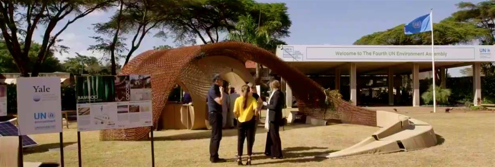

This article was originally published by UN Environment and is republished with permission.
Africa is urbanizing fast, as its population grows and many flocks to cities in search of jobs, education and healthcare.
Studies show that hundreds of millions more Africans will live in cities over the next three decades.
Many of these new urban Africans, however, are likely to end up in informal settlements. Already an estimated 200 million Africans live in informal settlements—often without access to energy and sanitation.
The growing class of urban poor need access to decent housing. But the challenge is that the global housing sector already emits almost a third of global greenhouse gas emissions and uses up to 40 per cent of the planet’s total resources. New approaches are clearly needed.
“As the housing sector grows—and it must grow if we want an equitable world—we need to reduce its environmental impact, not raise it,” said UN Environment Acting Executive Director, Joyce Msuya. “Smart design is the only way to meet our housing needs and stay within planetary boundaries.”
UN Environment, UN Habitat, the Yale Center for Ecosystems in Architecture and associated partners are working on these designs, one of which is on display at the UN Environment headquarters in Nairobi, Kenya.
First unveiled at the fourth United Nations Environment Assembly, the 3D-printed modular structure, made from biodegradable bamboo, aims to spark ideas and debate on how future biomaterial processes can help meet the Sustainable Development Goals, Habitat III New Urban Agenda and Paris Agreement.
The pavilion shows how post-agricultural waste—like bamboo, coconut, rice, soy and corn—can be turned into construction materials. It demonstrates solar energy and water systems that make homes self-sufficient and zero carbon. It highlights how micro-farming can be achieved with plant walls. All these features, and more, are integrated, monitored and managed by sensors and digital controls.
“As urbanization gallops forward, people around the world are tired of seeing precious natural habitats paved over with toxic, energy-intensive materials such as concrete and steel,” said Anna Dyson, Director of the Center for Ecosystems in Architecture at Yale University. “In the 21stcentury, global construction practices must innovate towards nature-based solutions for future cities. Our research consortium with East African collaborators is devoted to advancing state-of-the-art locally produced building systems.”
Anna Dyson (Director of the Center for Ecosystems in Architecture at Yale University) together with Amina Mohammed (Deputy Secretary-General of the United Nations) at the Nairobi Ecological Pavilion.
It is fitting that the pavilion is based in Kenya, as the government there has prioritized affordable housing as a key pillar of its Big Four Agenda, which aims to make the East African nation an upper middle-income country by 2030. Over the next five years, the government plans to build over 500,000 affordable houses across the country to meet the ever-growing housing demand.
To achieve the low-cost housing agenda, however, the industry needs to embrace technological changes that will result in the use of innovative sustainable construction, the aggregate effect of which would be to lower the embodied energy and average cost of manufacturing and housing. “Architecture must address the global housing challenge by integrating critically needed scientific and technical advances in energy, water, and material systems while remaining sensitive to the cultural and aesthetic aspirations of different regions,” said Deborah Berke, Dean of the Yale School of Architecture.
Open on original site ↗The pavilion serves as a starting point for those in government and industry to think about what they can do better. It is part of a series of demonstration buildings, which started with a 22-square-meter “Ecological Living Module”, powered by renewable energy and designed to minimize the use of resources such as water. This module was displayed at the United Nations High-level Political Forum on Sustainable Development in 2018.
SOURCE: UN ENVIRONMENT ASSEMBLY
